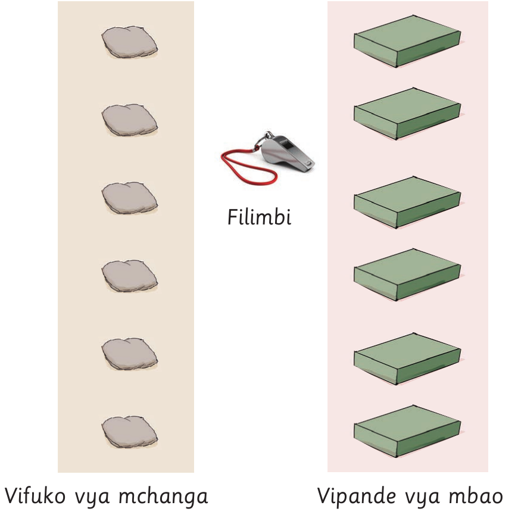
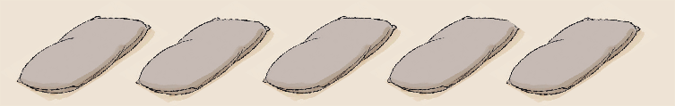
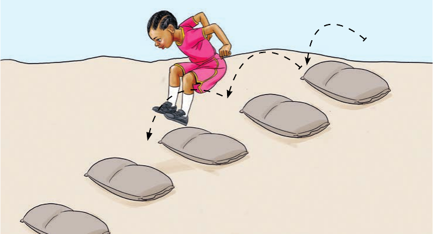

Tucheze mchezo
Mchezo wa kuruka viunzi
Vifaa: Vifuko vya mchanga, vipande vya mbao na filimbi.

Jinsi ya kuruka viunzi
- Panga vifuko sehemu ya kuchezea kwenye mistari iliyonyooka.
- Acha nafasi sawa kati ya vifuko.
- Simama nyuma ya kifuko cha mwanzo.
- Filimbi ikilia, anza kuruka vifuko kwa miguu miwili.
- Endelea kuruka hadi kifuko cha mwisho.
- Ukikanyaga kifuko utakuwa umekosea na utampisha mwingine.
- Mshindi ni anayemaliza bila kukanyaga kifuko.


Zoezi la 1
Shughuli ya kufanya 4
Cheza mchezo wa kuruka viunzi.